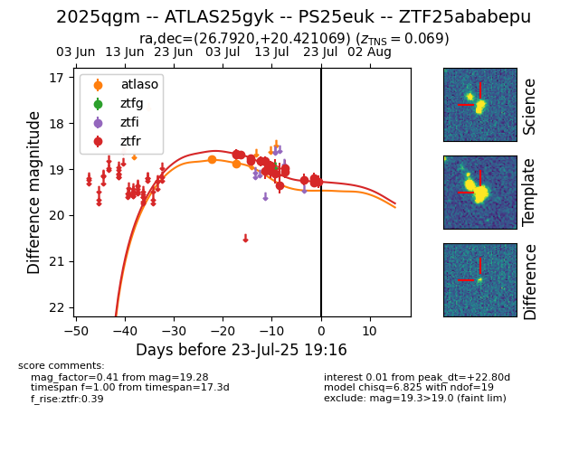

Target ZTF25ababepu at 2025-07-23 19:16, see:
FINK: fink-portal.org/ZTF25ababepu
Lasair: lasair-ztf.lsst.ac.uk/objects/ZTF25ababepu
ALeRCE: alerce.online/object/ZTF25ababepu
TNS: wis-tns.org/object/2025qgm
YSE: ziggy.ucolick.org/yse/transient_detail/2025qgm
alt names
ZTF25ababepu (ztf,fink)
2025qgm (tns,yse)
ATLAS25gyk (atlas)
PS25euk (panstarrs)
coordinates:
equatorial (ra, dec) = (26.7920,+20.42107)
galactic (l, b) = (140.2136,-40.57306)
photometry
last atlaso=18.89, ztfr=19.28
2 atlaso, 19 ztfr detections
